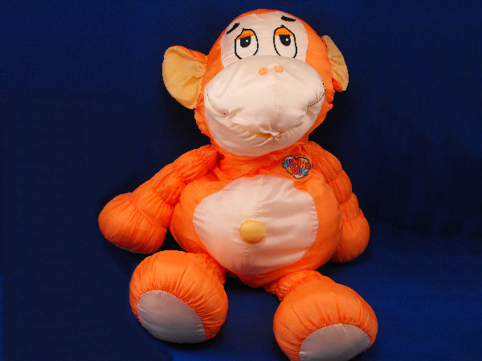

Hello world pg 4- The Beginning
THE BEGINNING
We can try to start at the beginning (kind of). I don't remember much. I was born on July 6th 1984. I don't even know what time it was. I was the third of 5 girls. My oldest sister, Tiffany, was adopted before she was born. My parents found out that they could not have children and my mom worked with her mom who wanted to give her up. My parents were ecstatic. After they began the process of adopting her they found out that they were pregnant. So Jenny is only 5 months younger than Tiffany. They were pretty close growing up. I am 2 years younger, then Brittany was born in 1988 than Brandy in 1991 so I guess the doctors were very wrong. My parents are some of the nicest people I know. They are too nice sometimes but I wouldn't trade them for anything in the world.
Every time someone asks what my first memory was I am stumped. It's not because I don't remember things. It's because I don't know what order my memories belong in. I don't have a great memory. I have even gone to the doctor for the problem, I'm sure that would have gone much better if I had what I needed to talk to him about. I remember a toy from my Kindergarten class that played ''It's a small world'' and had a block with bears on a see saw that moved up and down while the song played.
I remember when I was really little my parents got me a PuffaLump for Christmas. It was a big orange monkey and I carried him around with me everywhere.
I remember getting a balloon at the zoo almost every time I went and when I would come home with it Tiffany would ask if she could take it outside. Every time I would tell her that she could as long as she was careful and every time she would get it really close to one of the trees in our backyard that had thorns on it and it would pop. I could tell that she felt bad so I'm not sure why she did it.
I remember our back yard flooding every year and my dad had giant blocks of Styrofoam in the back yard that we treated like boats and used large limbs to push ourselves around the yard. Once Tiffany almost got her toe bitten off by an alligator snapping turtle.
We played outside a lot and I loved it, we would play hide and seek around the entire neighborhood with Mike, Tim and Ben. The best hiding place was after my dad bought his shed and it had an attic. I always needed to hide with someone because I was a scardy cat. I'm pretty sure my sisters tried to avoid me. Tim and Ben let me hide with them usually.
Here are some links to some of the stories that I have